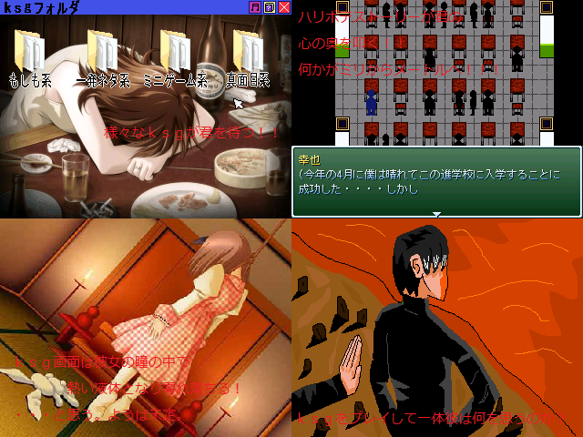

No.53-僕のｋｓｇ

■僕のｋｓｇ タガワ リュウノスケ
紹介文
今回はｋｓｇをある程度作りｋｓｇフォルダとしてまとめました。クオリティとか言い出すとキリないですが、とりあえず期待はしないでください。 息抜きにでもどうぞ。 本当に祭りに参加できるだけで最高ですが、作品もがんばるので待っててください。 よろしくお願いいたします。
管理人から一言: ミニゲームにどんなのが来るのかｗｋｔｋ
感想掲示板
<<前 戻る 次>>
© VIPRPG